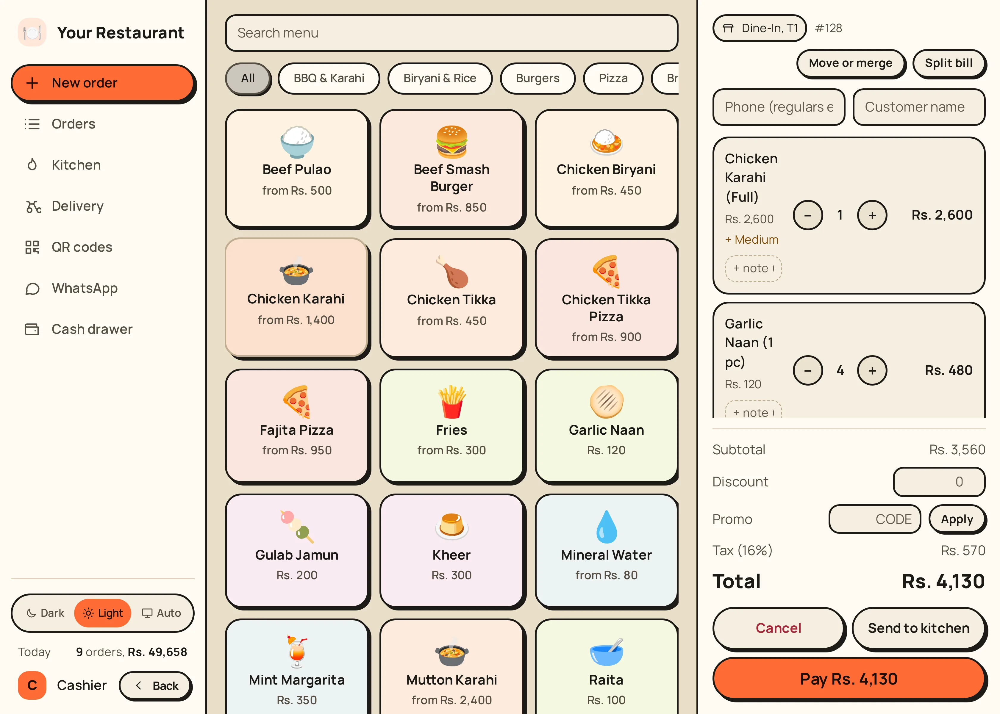
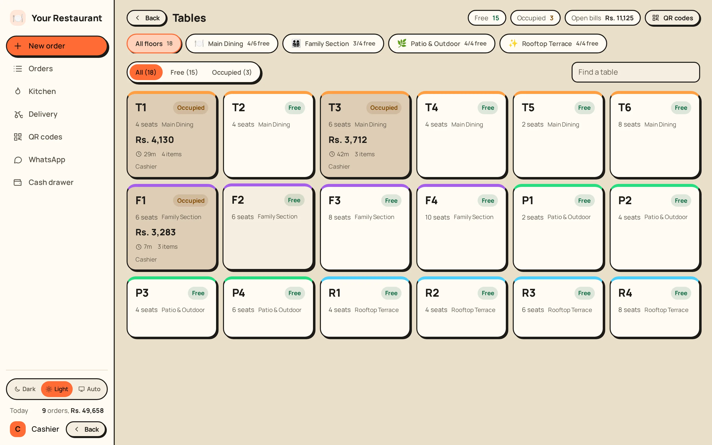
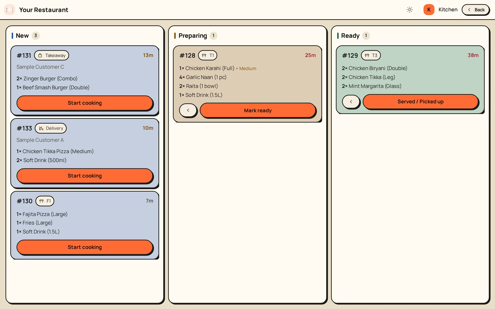
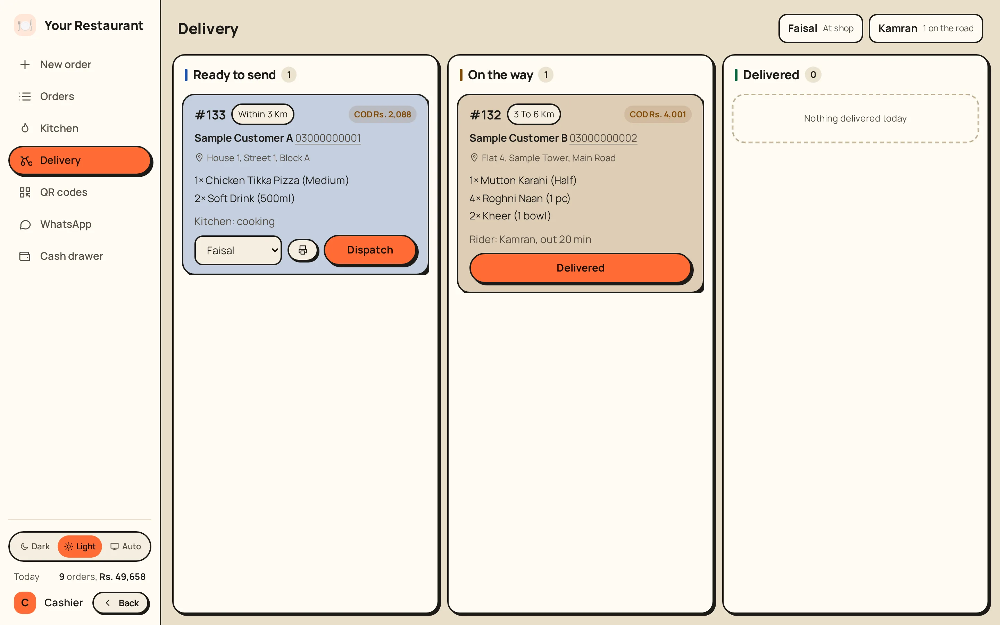
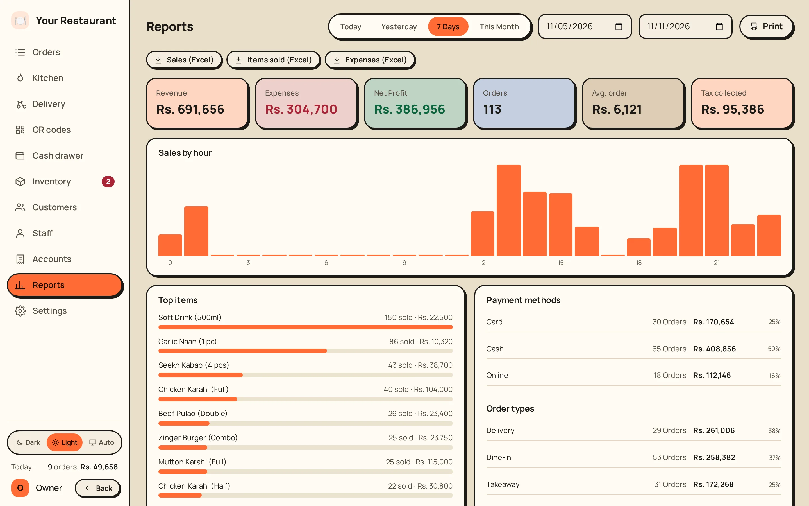
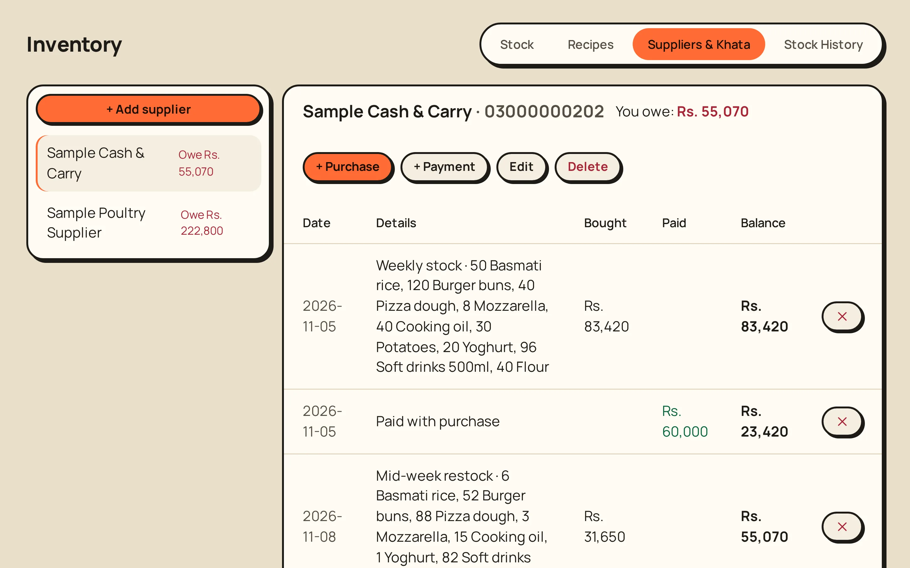
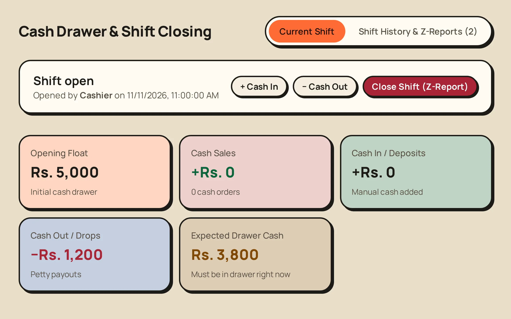
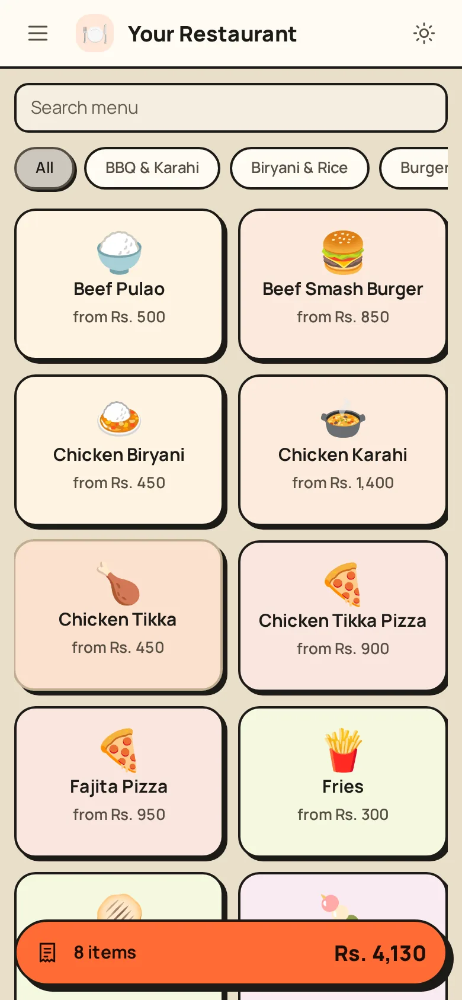
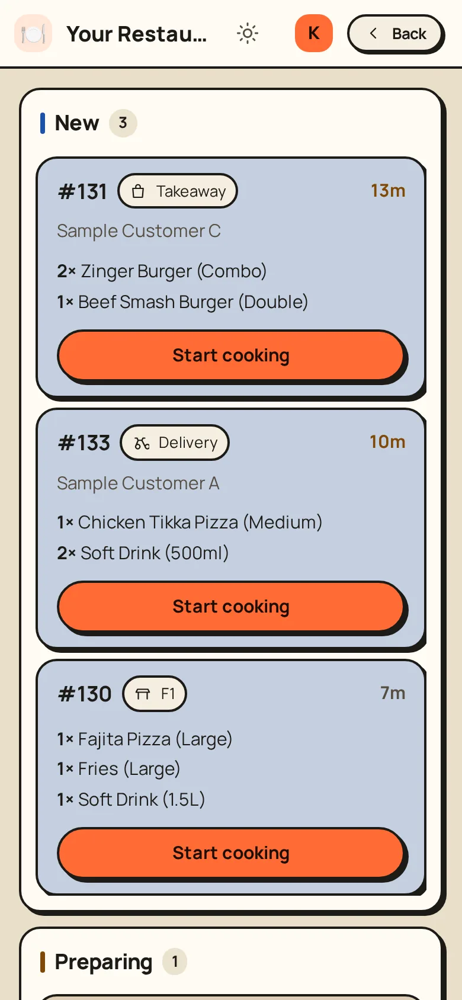

The agentic restaurant POS that answers WhatsApp
An agentic POS for restaurants in Pakistan: an AI agent answers customers on WhatsApp in Urdu, takes the order and sends it to your counter. Billing, tables, kitchen, delivery and khata are in the same system.
No signup and no card. A demo restaurant of your own opens in seconds.

A WhatsApp bot that takes the order
A real chat with the bot on the demo menu, from hello to an order on your counter. Scroll to watch it.
- 01Greets the customer
- 02Answers from your menu
- 03Understands voice notes
- 04Prices the order from the POS, not the AI
- 05Asks only what is missing
- 06Sends it to your counter to accept
- 07The order waits on your POS for one tap
- Today
- Assalam o alaikum
- AssistantWalaikum Assalam! 😊 Kya order karna hai ya menu dekhna hai?
- Aap ke paas kya kya milta hai?
- AssistantHumari menu mein BBQ & Karahi, Biryani, Burgers, Pizza, naan, drinks aur desserts sab hain. Kis cheez ka poochna hai? 🍕
- Voice note · 4sPizza kitne size mein milta hai aur kitne ka hai?heard: پیزا کتنے سائز میں ملتا ہے اور کتنے کا ہےauto-transcribed · 0.6 sRightCorrect it
- AssistantPizza 3 sizes mein: Small (8 inch) Rs 900, Medium (10 inch) Rs 1,500, Large (12 inch) Rs 2,000 — Chicken Tikka Pizza. Fajita Pizza Small Rs 950, Medium Rs 1,550, Large Rs 2,100. 🍕
- Theek hai. 1 Chicken Tikka Pizza large, 1 Zinger Burger combo aur 2 soft drink 500ml bhej dein
- AssistantBilkul!
🧾 Aapka order
1× Chicken Tikka Pizza (Large) — Rs 2,000
1× Zinger Burger (Combo) — Rs 950
2× Soft Drink (500ml) — Rs 300
Total: Rs 3,250
Delivery ya takeaway? - Delivery
- AssistantTheek hai, delivery.
🧾 Aapka order
1× Chicken Tikka Pizza (Large) — Rs 2,000
1× Zinger Burger (Combo) — Rs 950
2× Soft Drink (500ml) — Rs 300
Total: Rs 3,250
Address bhej dein (ghar, gali, area) ya location pin 📍. - House 12, Street 5, Block B, Sample Town
- AssistantNoted 👍
🧾 Aapka order
1× Chicken Tikka Pizza (Large) — Rs 2,000
1× Zinger Burger (Combo) — Rs 950
2× Soft Drink (500ml) — Rs 300
Total: Rs 3,250
📍 Delivery: House 12, Street 5, Block B, Sample Town (+ delivery charges, agar hon)
Confirm karne ke liye YES likhein. - YES
- Assistant✅ Shukriya! Aapka order hamari team ko bhej diya gaya hai. Accept hote hi aapko message aa jayega.
- 1× Chicken Tikka Pizza (Large)Rs. 2,000
- 1× Zinger Burger (Combo)Rs. 950
- 2× Soft Drink (500ml)Rs. 300
One screen for every job in the restaurant
Cashier, kitchen and rider each open only the screen they need.



The numbers behind the counter
What sold, what you spent and what should be in the drawer.



Counter PC, tablet or phone
One PC runs it; other screens open it in a browser.
- Keeps billing when the internet is down
- Thermal receipt and kitchen printers
- Dark screens for the kitchen, light for the counter


Before you try it
What is an agentic POS?
A POS that does work on its own instead of only recording it. HazelPOS has an AI agent that reads WhatsApp messages and voice notes, answers from your real menu and prices, asks for what is missing (delivery or takeaway, then the address) and sends the order to your cashier to accept. The POS calculates every total, not the AI.
Is HazelPOS made for restaurants in Pakistan?
Yes. It chats in Urdu, Roman Urdu and English, prices in rupees, takes cash, card and Raast QR, keeps supplier khata, tracks rider cash on delivery and prints receipts with your NTN and tax.
What is in the free demo?
The whole POS with a sample restaurant already running. Put in your own name and menu, and switch between owner, cashier and kitchen in one click.
Can I talk to the WhatsApp bot in the demo?
Not yet. The chat on this page is a real conversation with the bot on the demo menu. Message us and we will show it to you live on WhatsApp. Your own number is linked once you buy HazelPOS.
Does it need internet?
Billing, tables and the kitchen run on your own PC, so they work offline. WhatsApp catches up when the internet returns.
Does it handle tax invoices?
Receipts show your NTN and tax. PRA and FBR reporting switches on with your credentials.
How much does it cost?
It depends on your branches. Message us for a plain answer.
Run your restaurant on it for an afternoon
Free, nothing to install. Put in your menu and take a few orders.
Pricing and setup: WhatsApp your sales number